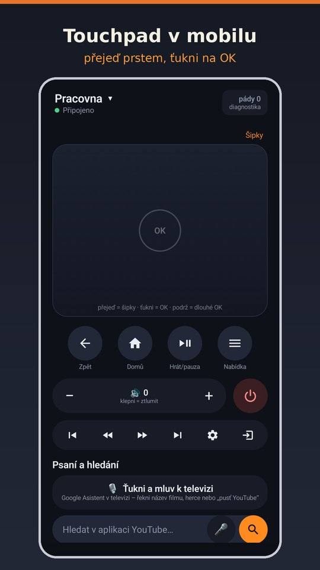
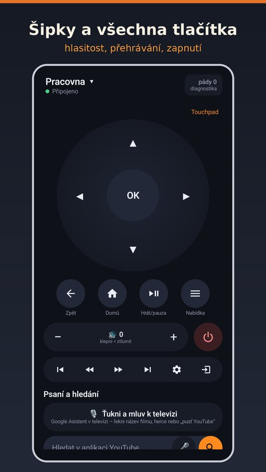
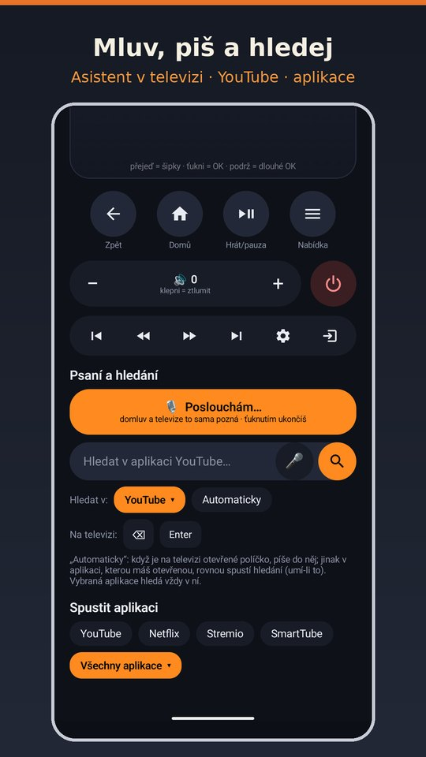
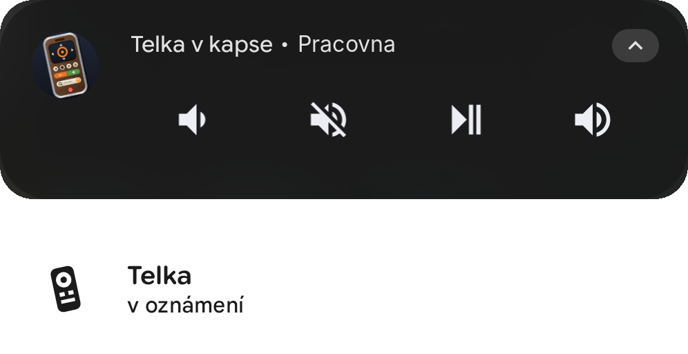
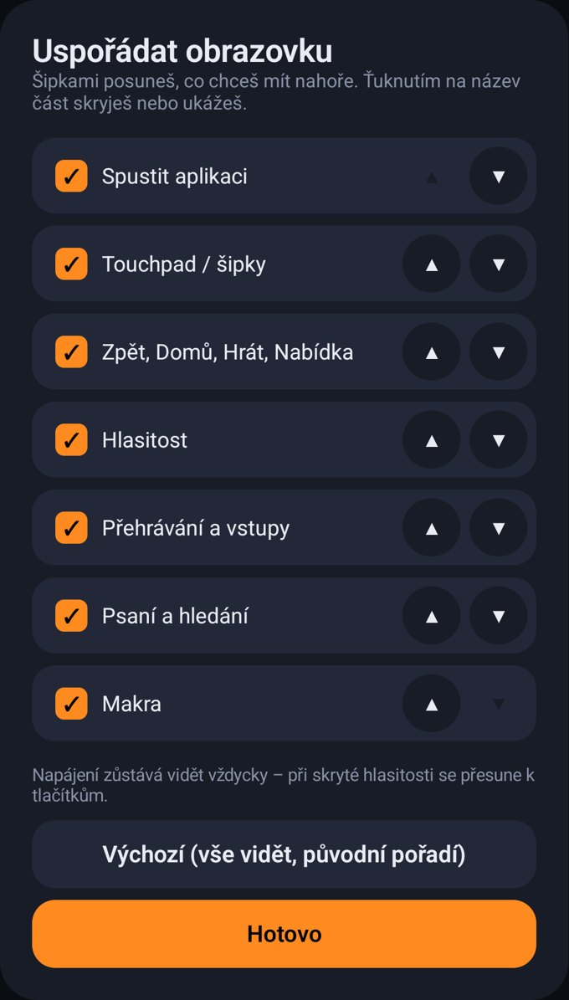
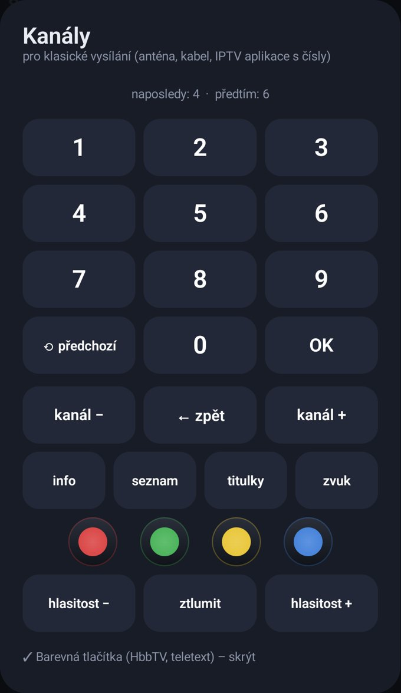

Telka v kapse
Ovladač televize v mobilu pro Google TV a Android TV
Vybité baterie? Ovladač zlobí? Večer zachráníš s Telkou.
Pro Česko a Slovensko vždy zdarma · od Aplikace do kapsy
Novinky
26. 11. 2026 · verze 0.74–0.80
- 🔗 Vkládání odkazu do políčka na televizi.
- ✨ Kouzelný paket: Telka vzbudí televizi na Wi-Fi i v úsporném režimu. Stačí jednou zadat MAC adresu televize – Telka si o ni po připojení sama řekne a poradí, kde ji najít.
- Zástupci na ikoně: podrž ikonu Telky a vyber „Zapnout televizi“ nebo „Vypnout televizi“ – bez otevírání aplikace.
- Když televize dostane v síti jinou adresu, Telka ji sama najde a připojí se.
25. 11. 2026 · verze 0.70–0.73
- Spolehlivější spojení při sledování živého vysílání i YouTube – Telka si poradí s televizí, která se chvíli neozývá.
- Karta „Na televizi“ rychleji ukáže, co se právě přehrává – i ve SmartTube.
- Ovladač už při načítání neposkakuje.
24. 11. 2026 · verze 0.68–0.69
- Uspořádej si obrazovku podle sebe – v menu televize posuneš jednotlivé části nahoru i dolů a co nepotřebuješ, skryješ. Třeba aplikace úplně nahoru a hlasitost pryč, když zvuk řídí soundbar.
- Moje aplikace – vybereš si, které aplikace chceš mít po ruce na hlavní obrazovce.
- Přes tlačítka teď jde normálně posouvat obrazovka – tlačítko se stiskne až po puštění prstu.
- „Ťukni a mluv“ umí i podržet, mluvit a pustit.
- Barevná tlačítka vypadají jako na originálním ovladači – ověřeno s HbbTV na ČT.
- Klidnější spojení na živém vysílání.
24. 11. 2026 · verze 0.65–0.67
- Jak na to – nová nápověda (tlačítko ? nahoře) s popisem všech tlačítek a tipy.
- Začínáme – krátký průvodce pro první spuštění.
- Větší ovladač – v menu televize zvětšíš celou Telku: písmo, tlačítka i touchpad.
- Barevná tlačítka pro teletext a HbbTV – zapneš je v Kanálech.
23. 11. 2026
- Telka je na Google Play – zatím v uzavřeném testu pro Česko a Slovensko.
- Upřesněná spotřeba ve spánku podle skutečných měření (viz níže „Důležité“).



Ovladač v oznámení
Hlasitost, ztlumení a pauza rovnou z lišty oznámení – i na zamčené obrazovce, bez otevírání aplikace. Zapneš ho dlaždicí Telka v rychlém nastavení (nebo v aplikaci v menu televize).

Podle sebe
V menu televize ťukni na Uspořádat obrazovku. Šipkami posuneš nahoru, co používáš nejvíc – třeba aplikace nad ovladač – a co nepotřebuješ, jedním ťuknutím skryješ (třeba hlasitost, když zvuk řídí soundbar). Napájení zůstane vždycky po ruce. Hned vedle je Větší ovladač, který zvětší celou Telku pro lepší čitelnost.

Kanály jako na ovladači
Pro ty, kdo koukají na anténu, kabel nebo IPTV s čísly kanálů. Ťukneš na 123 vedle touchpadu, vyťukáš číslo a OK přepne hned – bez čekání. Předchozí tě vrátí na kanál, kde jsi byl před tím, a nahoře vidíš, co právě píšeš. Boční tlačítka hlasitosti telefonu fungují i tady. Pro teletext a HbbTV (třeba archiv ČT na červeném) si zapneš i barevná tlačítka.

Ve spánku se televize může úplně odpojit ze sítě – a pak ji nevzbudí nic, ani Telka. Rozhoduje energetický režim v televizi:
Nastavení → Systém → Napájení a energie → Energetický režim
(anglicky Energy mode: Increased = Zvýšený, Optimized = Optimalizovaný)
| Zvýšený | Optimalizovaný | |
|---|---|---|
| Televize na kabelu | ✓ zapne | ✗ nezapne |
| Televize na Wi-Fi | ✓ zapne | ✓ zapne – s MAC adresou v Telce |
Doporučení: televize na Wi-Fi → nech Optimalizovaný a v Telce doplň MAC adresu televize (viz níže) – Telka ji zapne a ve spánku skoro nic nebere. Televize na kabelu → je potřeba Zvýšený.
✨ Kouzelný paket. Spící televize v režimu Optimalizovaný zůstane na Wi-Fi, ale slyší už jen na tzv. kouzelný paket (Wake-on-LAN) – zvláštní zprávu, která obsahuje její MAC adresu. Telka ho pošle sama, jen musí MAC adresu znát. Zadáš ji v Telce přes ✎ u televize (v nabídce pod jejím názvem).
MAC adresu najdeš v televizi: Nastavení → Síť a internet → tvoje Wi-Fi síť → MAC adresa
(případně Nastavení → Systém → Informace → Stav)
(vypadá třeba takhle: A1:B2:C3:D4:E5:F6 · kabel a Wi-Fi mají každý jinou – zadej tu, přes kterou je televize připojená)
Kolik to stojí? Ve spánku v režimu Optimalizovaný bere televize obvykle pod 1 W – pár desítek korun za rok. V režimu Zvýšený zůstává vzhůru víc věcí (síť, Cast, rychlý start) a televize bere obvykle kolem 10 W (podle modelu zhruba 5–20 W). Při ceně elektřiny 6 Kč/kWh to dělá asi 1,40 Kč denně, kolem 500 Kč za rok.
Pro srovnání – při sledování: běžná televize (55–65″) bere orientačně 70–150 W, s HDR obrazem i víc. Hodina sledování tak stojí asi 0,40–1,80 Kč.
Uvedené hodnoty jsou průměrné, přesná spotřeba záleží na modelu a velikosti – najdeš ji v energetickém štítku a návodu své televize (databáze EPREL). Ověřeno na televizích TCL s Google TV; u jiných značek se názvy v nastavení můžou mírně lišit (třeba „Pohotovostní režim → Bez obrazovky“).
Soukromí a bezpečnost
- Žádný internet navíc – Telka mluví jen s televizí v tvé domácí síti. Žádné účty, reklamy, statistiky ani sledování.
- Šifrované spojení – stisky, psaní i hlas jdou do televize šifrovaně, stejně jako u originální aplikace Google TV.
- Spárování kódem – mobil se s televizí spojí jen po opsání kódu z obrazovky. Bez něj televizi nikdo cizí neovládne.
- Ověřená televize – Telka si při spárování zapamatuje „otisk“ televize a při každém připojení ho zkontroluje. Kdyby se za televizi vydávalo jiné zařízení v síti, nic mu nepošle a upozorní tě.
- Mikrofon jen na ťuknutí – nahrává se, jen když ťukneš na „Ťukni a mluv“, a zvuk jde rovnou do televize.
Neprůstřelné není nic, ale pro ovladač v domácí síti je to víc než dost.
Jak je to s cenou?
Telka vznikla doma, pro naši televizi – a pro Česko a Slovensko zůstane vždy zdarma. To platí.
Rád ji ale dám i dalším lidem ve světě. Tam si ji nejdřív vyzkoušíš zdarma, a když zjistíš, že ti večery zachraňuje, jednou zaplatíš a je tvoje – navždy. Žádné předplatné, žádné reklamy, žádné přikupování dalších funkcí.
Co potřebuješ
- Televizi nebo krabičku s Google TV nebo Android TV – TCL, Sony, Philips, Hisense, Xiaomi, Chromecast s Google TV a další
- V televizi službu Android TV Remote Service ve verzi 5 nebo novější – verzi najdeš v televizi v Nastavení → Aplikace, aktualizace jde přes Obchod Play (nové televize ji mají vždy)
- Mobil s Androidem 8 nebo novějším
- Mobil a televizi ve stejné domácí síti (jedno klidně na Wi-Fi, druhé na kabelu)
- Pro mluvení k televizi zapnutého Google Asistenta (ne režim „pouze aplikace“)
Televize Samsung (Tizen) a LG (webOS) zatím podporované nejsou.